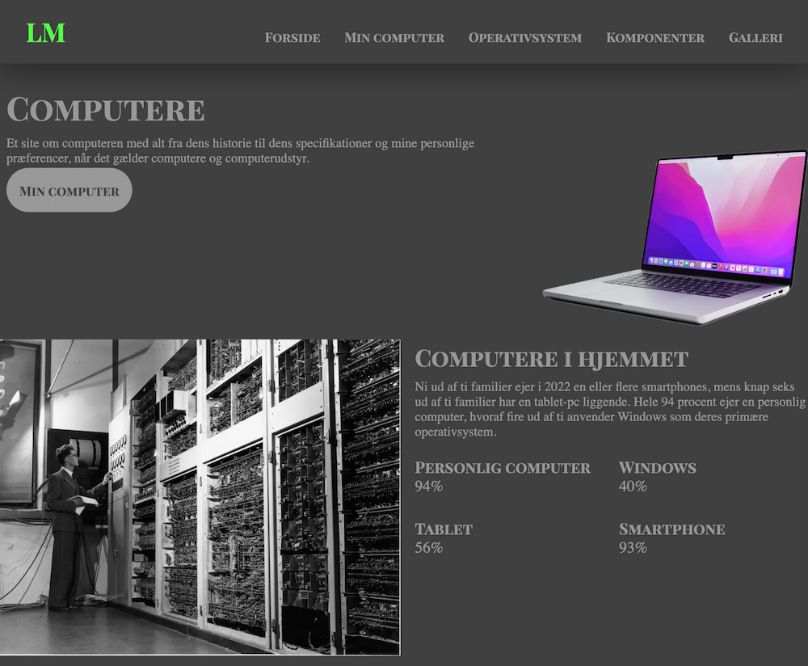
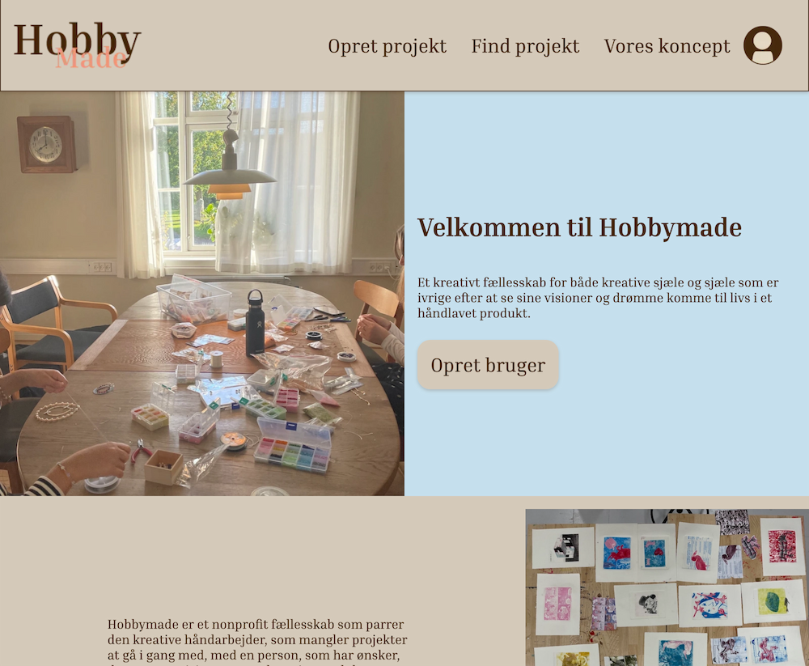
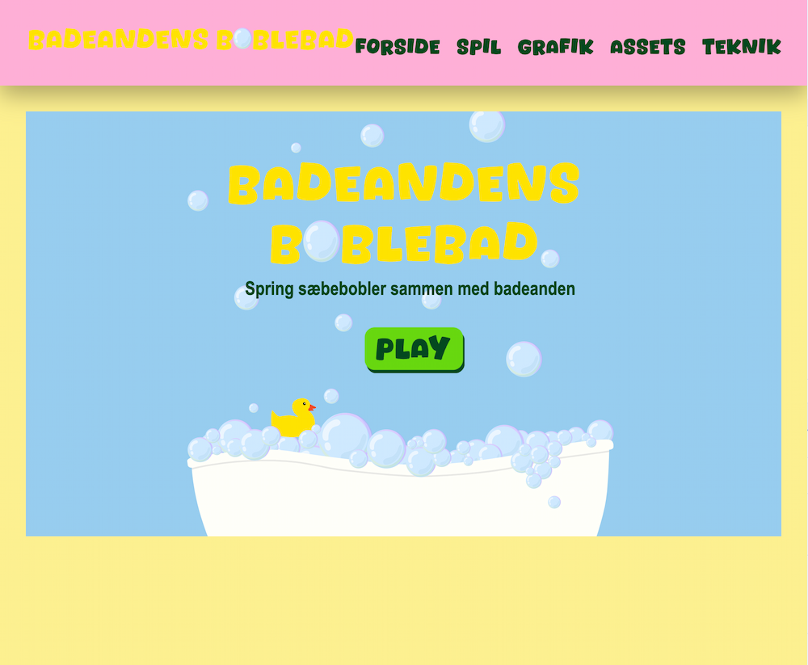
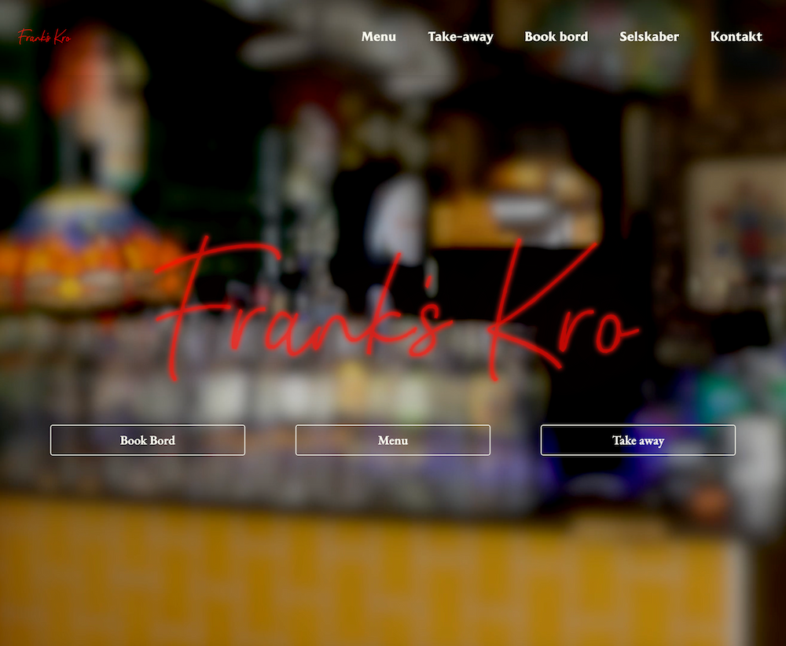

PORTFOLIO
02
WEBSITE
På tema 02 lærte vi grundlæggende viden, redskaber og færdigheder til design og kodning af digitale brugergrænseflader. Vi gennemgik generel viden omkring filformater, mappestruktur og ophavsret/rettigheder. Indenfor design var vi (blandt andet) omkring gestaltlovene, visuelt hieraki og kontraster, typografi og tekstopsætning. I forhold til kodning lærte vi at kode i HTML og CSS, herunder style og brugen af grid. Herunder lærte vi at lave et responsivt design med “mobile first” tilgangen, hvor media queries er essentielle.
03
EMNESITE
På tema 03 fik vi en grunlæggende forståelse for samspillet mellem brugereoplevelsen (UX) og brugergrænseflader (UI) som brugere navigere på. En vigtig viden at nævne her er UI konventioner, som vi var omkring. Vi fik et indblik i teorier, værktøjer og metoder til at gennemgå en fuld designproces, samt videreformidling af denne proces.
04
ANIMATION
På tema 04 beskæftigede vi os med CSS animation og Javascript igennem at lave vores eget spil. Til spillet arbejdede vi med udtryksformer i form af formgivning af grafiske elementer samt kompositionsprincipper. En vigtig læring i temaet var også de digitale formater .svg og .wav.
05
INDHODSITES
Tema 05 var delt op i to opgaver ‘Passionsite’ og ‘Virksomhedssite’. Fælles for dem begge var produktion af indhold til et site herunder præproduktion (5-skudsreglen, storyboard og interview forberedelse), selve produktionen samt postproduktion. I temaet fik vi erfaring med at interviewe, filme og optage ekstern lyd, og derefter bruge Premiere Pro og Audition til redigering. Vi arbejder også med animeret vektorgrafik (Lottiefiles).